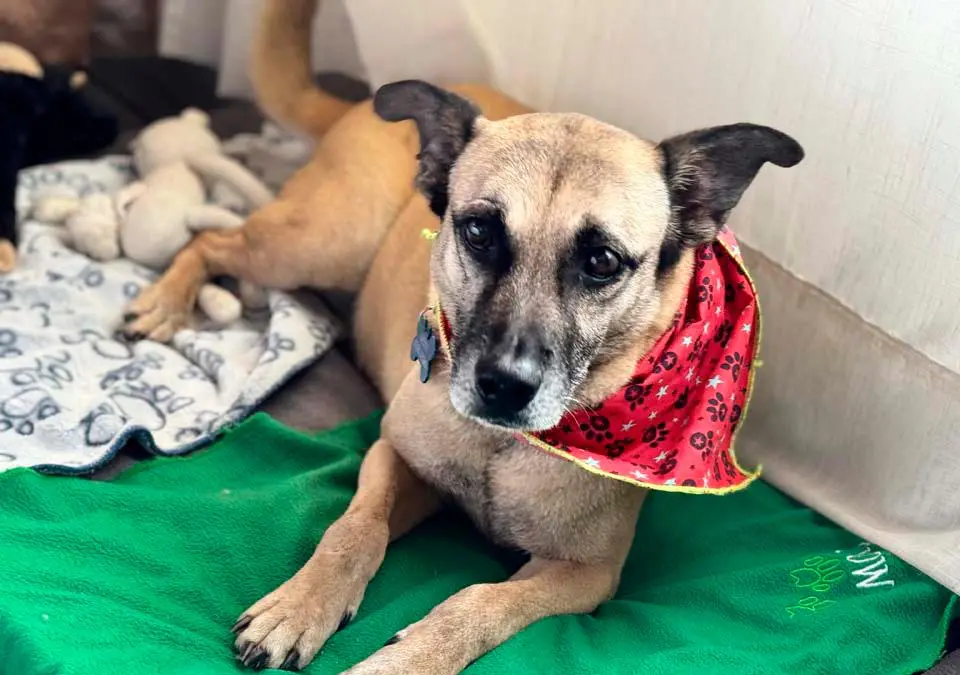
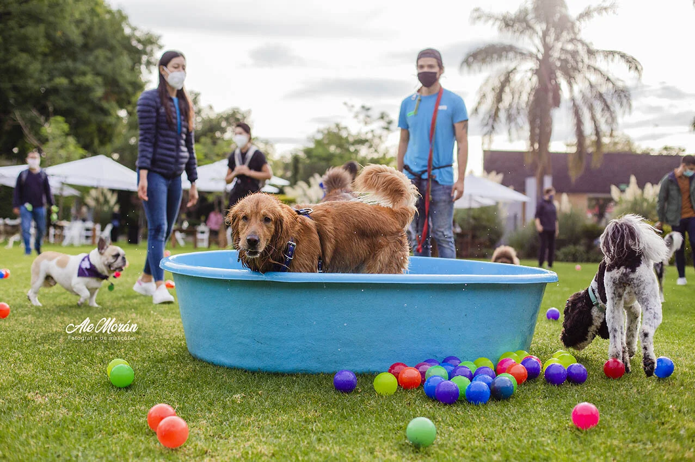

Estas cifras logran reflejar la creciente necesidad que hay para cuidar de los animalitos, cada vez hay más, y aunque somos más y podemos ser más grandes, necesitamos ayuda a veces, es mucho terreno, dinero, tiempo, y personal implicado, y nos sería de extrema utilidad tu ayuda, por eso, si deseas apoyar este proyecto para que siga a flote, dale click aquí para contribuir, ¡todo lo que nos puedas brindar será de gran ayuda!
Animales rescatados

Se han rescatado 324 animales estos últimos 12 meses.
Animales adoptados

Se han reubicado/adoptado 289 animales en nuestro proyecto en 6 meses de este año.
Voluntarios activos
Tenemos 42 voluntarios activos este año.
Eventos organizados

Hemos organizado 18 eventos este año, en diferentes ciudades y localidades.